여행 구상 도우미 — 실행 결과
이 페이지는 실행된 앱이 아니라, 앱으로 만든 결과물(최종 승인 v11)을 보여 주는 정적 페이지다. 앱은 각자 컴퓨터에서 켠다(실행 방법).
입력한 구상: 2박 3일 혼자여행, 국내 여행, 예산 50만원 이하, 힐링
- AI가 구상에서 조건을 가리고, 실제 검색으로 핵심 개념 6개를 제안
- 사람이 2개를 고름: 가을 끝자락 강원 바다·숲·메밀밭 / 한옥 도시 걷기
- AI가 꼭 필요한 것만 질문(출발지·이동 수단) → 답: 서울·수도권, 대중교통
- AI가 쟁점 7개를 세우고 근거를 붙여 해설, 앱이 출처로 근거 수준을 다시 점검
- 사람이 최종 승인 → 앱이 카드·문서를 내보내고 다시 열어 점검(통과 43 · 실패 0 · 미확인 6)
쟁점 7개: 근거 충분 0 근거 일부 3 자료 부족 4 · 조사 기준 2026-10-23
카드 12장
카드를 누르면 원본 크기(1080×1350)로 열린다. 그림은 AI 생성이 아니라 앱이 도형으로 그린 아이콘이다.
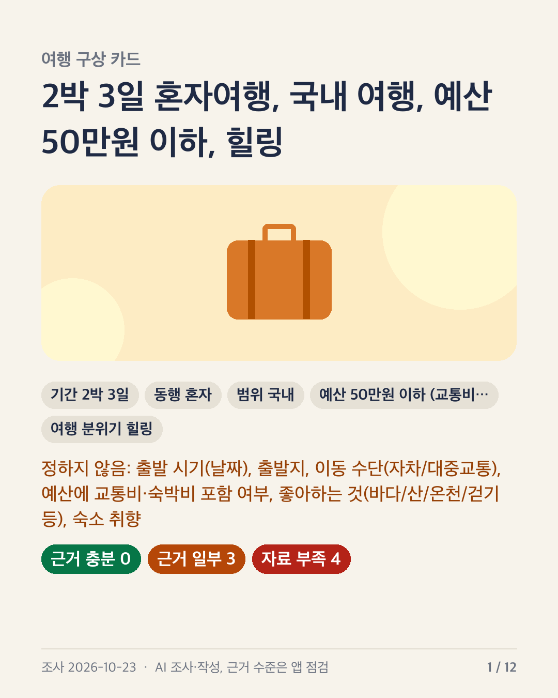
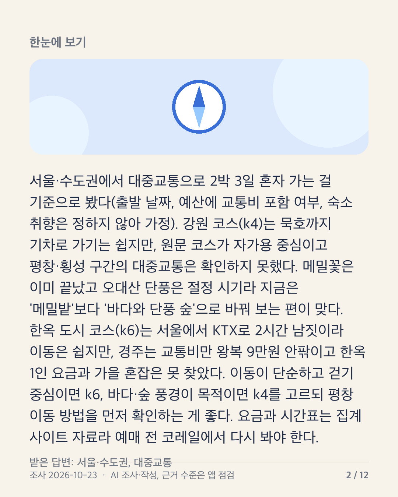
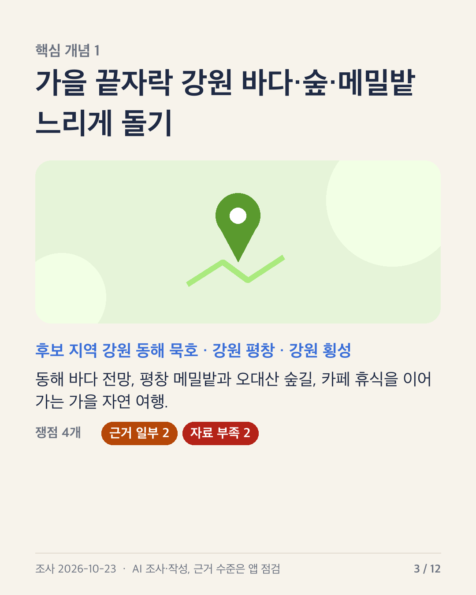
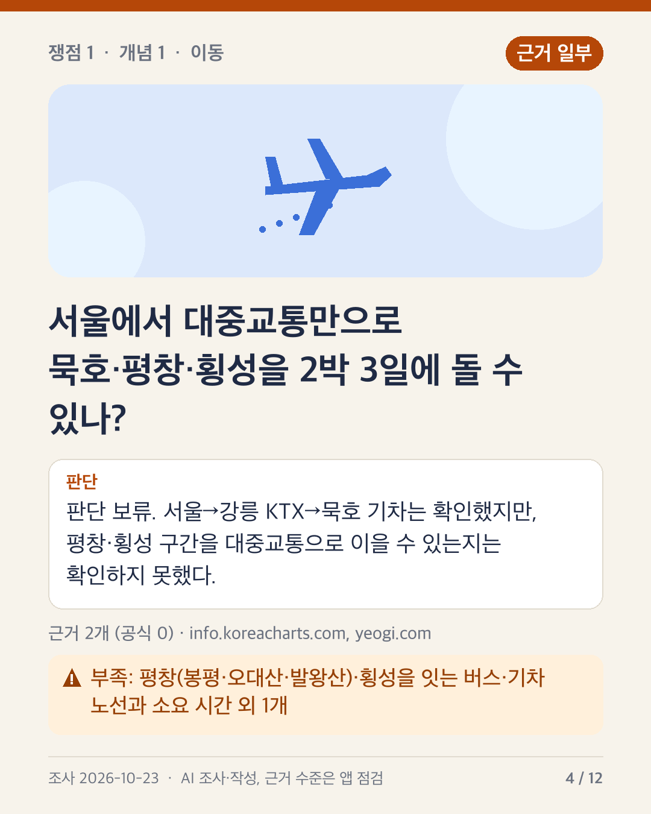
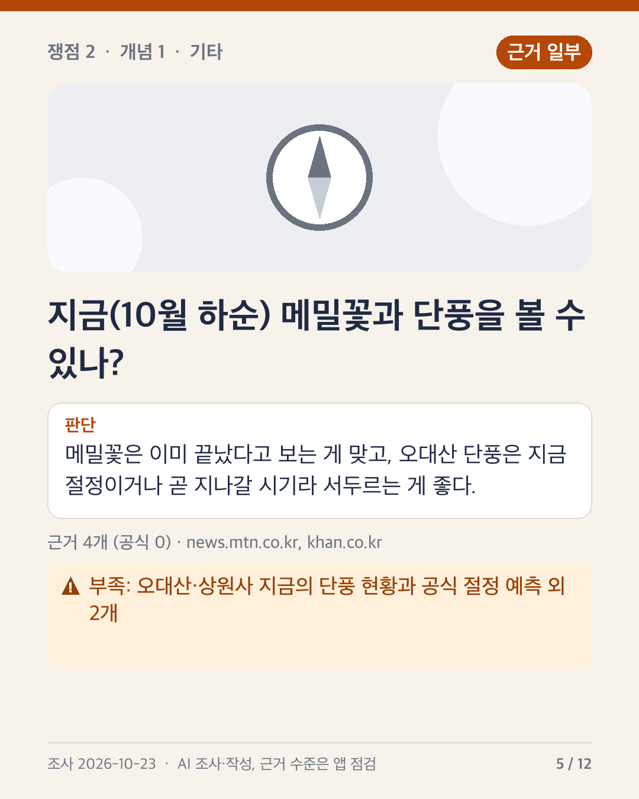
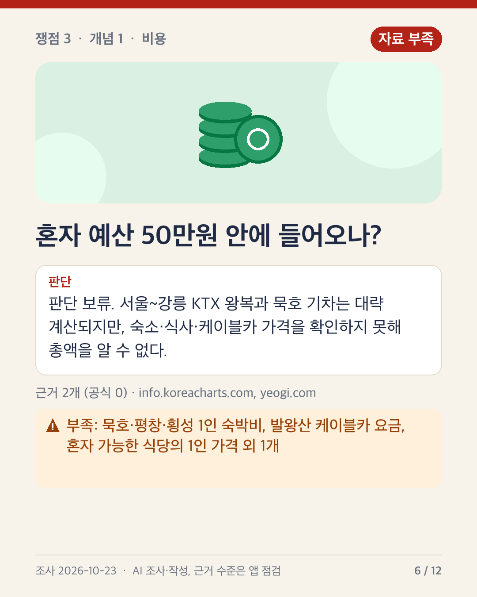
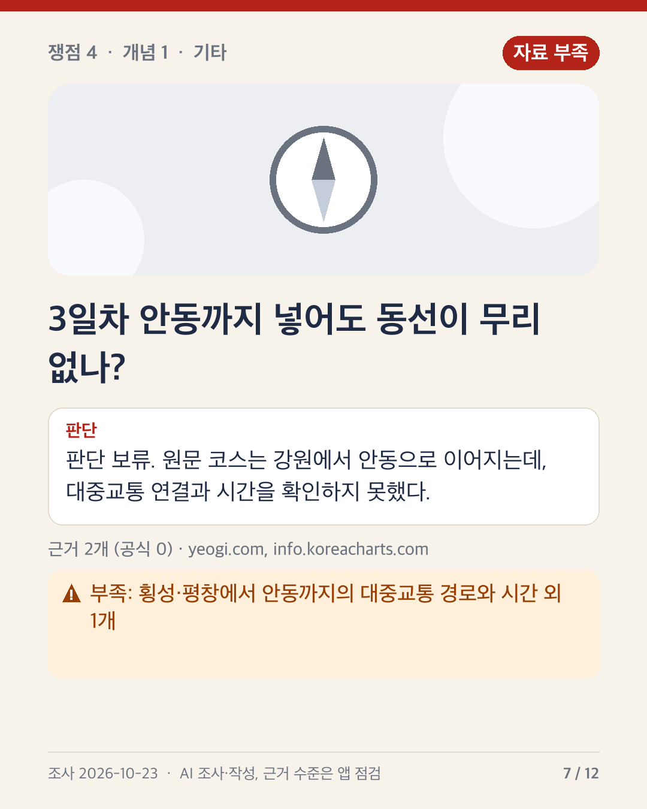
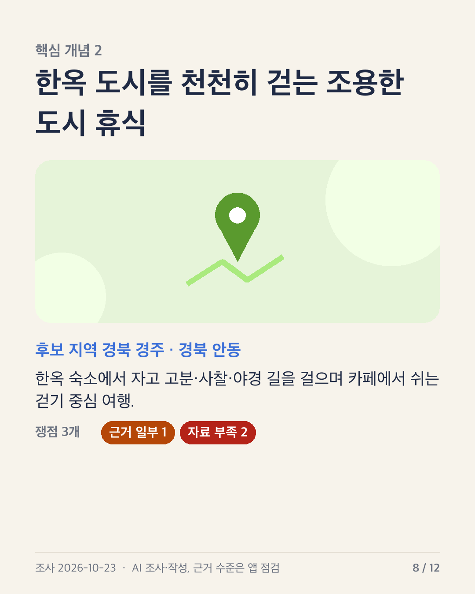
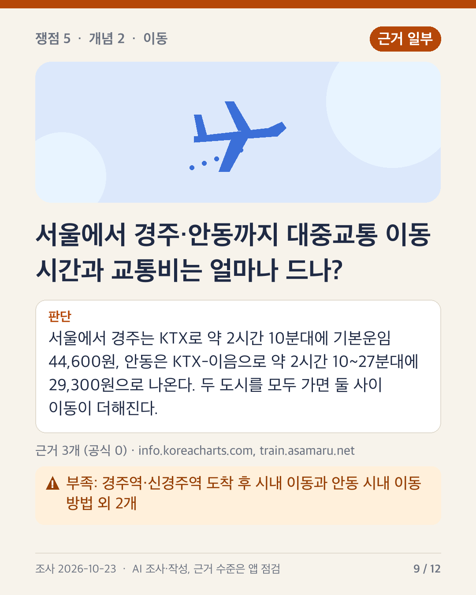
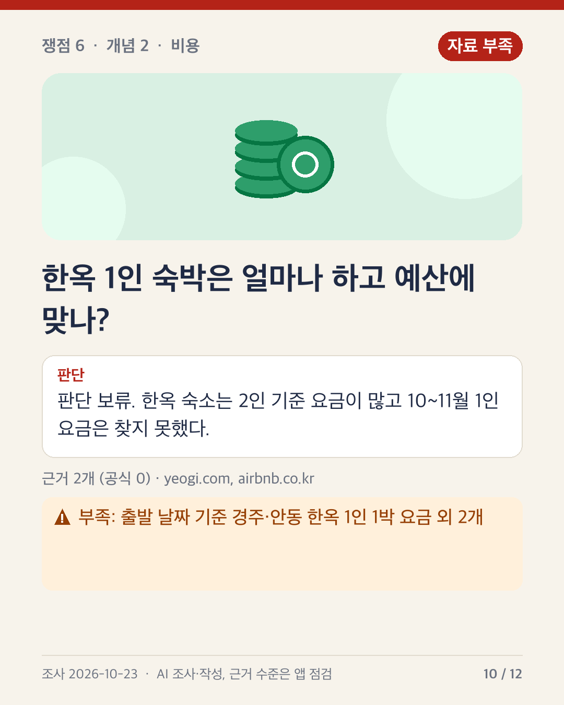
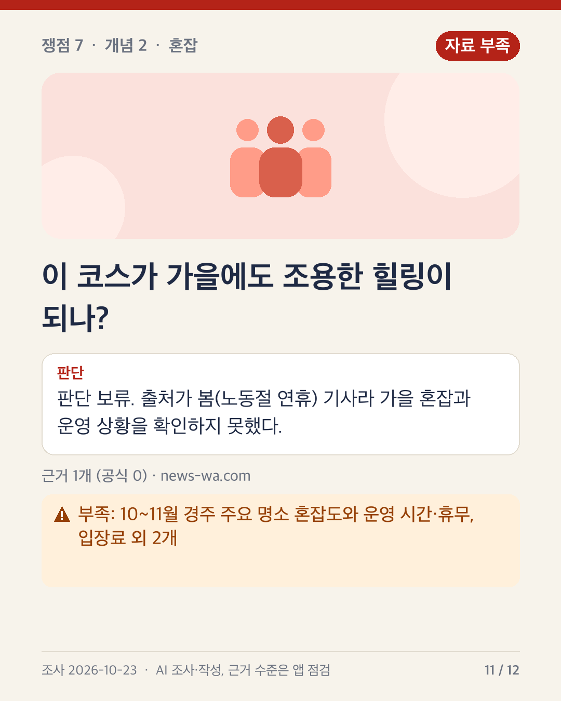
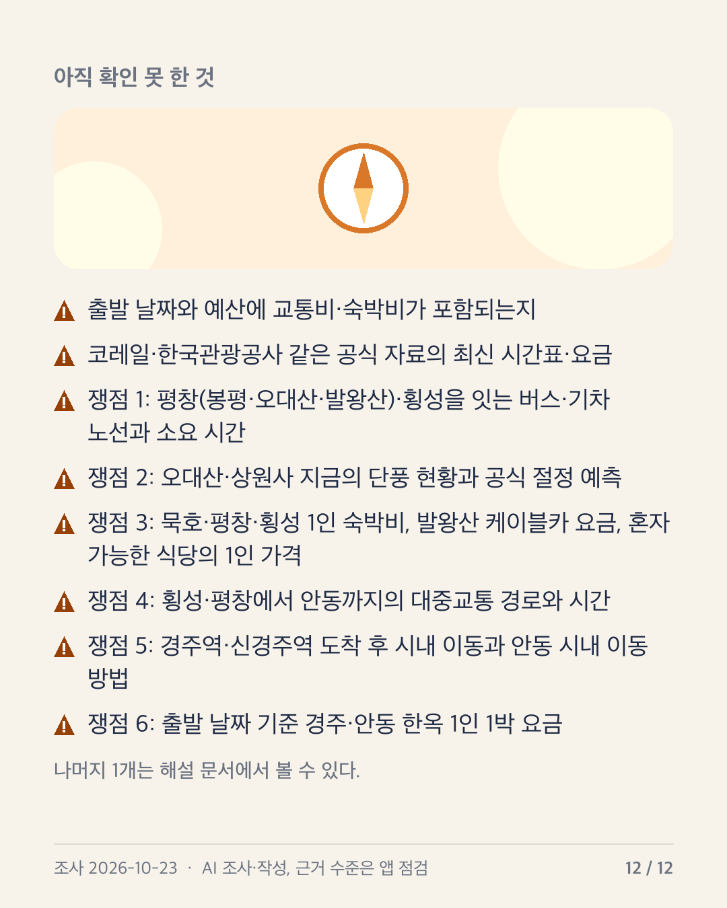